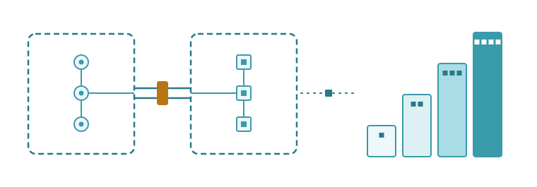
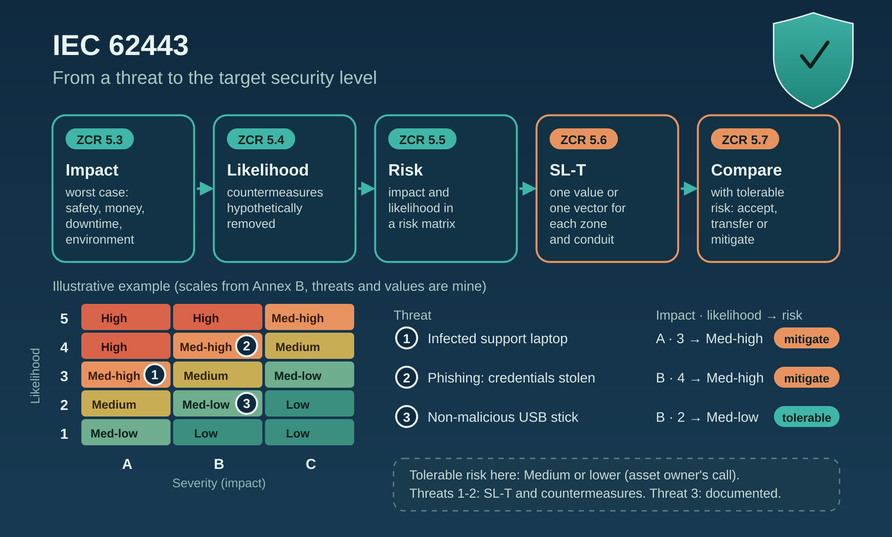
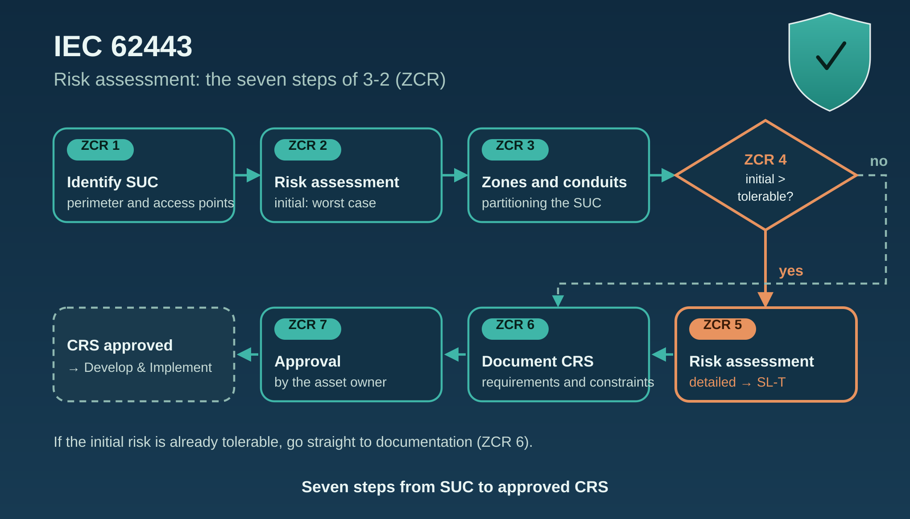

From threats to the target SL (ZCR5)¶

Fine, so which security level do we choose?
If the answer comes in ten seconds, it is usually a number picked out of thin air. The target is built, threat by threat, and the standard tells you how, at least up to a point. This is the part of the detailed risk assessment that goes from the list of threats to the SL-T of each zone and conduit.

Where we are¶
We have the SUC, the worst case, the zones and conduits, and the list of threats and vulnerabilities (ZCR 5.1 and 5.2). Now, for each threat on each zone or conduit, the standard asks us to work out how much it hurts, how likely it is, and what that means for the security level.
ZCR 5.3: consequence and impact¶
Each threat scenario has to be evaluated for the consequence if it materializes. The standard asks to document the worst case in terms of risk areas such as personnel safety, financial loss, business interruption and environment.
Two practical points that come straight from the text:
- Do not start from zero. Existing PHAs and other risk assessments (IT, functional safety, business, physical security) should be reviewed to help determine the consequences.
- If the worst-case impact is low, the team may decide to move on to the next threat. Not every scenario deserves a full analysis.
The measure can be qualitative or quantitative. Typically the organization uses a consequence scale defined in its own risk management system. Annex B of the standard gives an example, with categories A (high), B (medium) and C (low) across operational, financial and health, safety and environment aspects.
| Category | Operational: outage at one site | Operational: outage at multiple sites | Operational: national infrastructure and services | Financial: cost (million USD) | Financial: legal | Financial: public confidence | HSE: people onsite | HSE: people offsite | HSE: environment |
|---|---|---|---|---|---|---|---|---|---|
| A (High) | >7 days | >1 day | Impacts multiple sectors or disrupts community services in a major way | >500 | Felony criminal offense | Loss of brand image | Fatality | Fatality or major community incident | Citation by regional agency or long-term significant damage over large area |
| B (Medium) | <2 days | >1 hour | Potential to impact sector at a level beyond the company | >5 | Misdemeanor criminal offense | Loss of customer confidence | Loss of work day or major injury | Complaints or local community impact | Citation by local agency |
| C (Low) | <1 day | <1 hour | Little to no impact to sectors beyond the individual company. Little to no impact on community. | <5 | None | None | First aid or recordable injury | No complaints | Small, contained release below reportable limits |
ZCR 5.4: unmitigated likelihood¶
Then, for each threat: how likely is it that it materializes? Here the standard has a rule that is easy to get wrong and easy to find in an exam: the likelihood is unmitigated. Existing cybersecurity countermeasures of the zone should not be considered. They are "hypothetically eliminated".
There is one exception that deserves attention. The determination does recognize:
- countermeasures that are inherent to the IACS components;
- non-cyber independent protection layers, such as physical security, mechanical safeguards (a pressure safety valve, for example) or emergency procedures that are in place.
Factors to consider include the motivation and capability of the threat source, the history of similar threats, known vulnerabilities (from ZCR 5.2, so the inventory pays off again) and the attractiveness of the target.
Likelihood is evaluated twice in the detailed assessment: now without countermeasures, to establish the unmitigated risk, and later (ZCR 5.9) with them, to establish the residual risk. That is the topic of the next post.
One more detail: consequence-only methodologies are allowed. They do not factor likelihood in and implicitly assume it is constant, for example always present, a value of 1.
ZCR 5.5: unmitigated risk¶
Easy one: impact and unmitigated likelihood combined. It is usually done with a risk matrix, which establishes the relationship between likelihood, impact and risk. Annex B shows several: 3 x 3, 3 x 5, 5 x 5 and others. And it says something I like, and that you should take seriously: matrices vary in size, scales and colors, and it is critical that the team uses the one approved by the asset owner for the facility being assessed.
ZCR 5.6: determine SL-T¶
Here is the requirement, in one line: an SL-T shall be established for each security zone or conduit. It can be a single value or a vector (see Security Level as a Vector, and Annex A of 62443-3-3).
And here is the surprise: there is no prescribed method. The standard's guidance lists some approaches that organizations use:
- establish the SL-T from the difference between the unmitigated risk and the tolerable risk;
- establish it from the SL definitions in Annex A (the attacker profiles of Security Levels: casual, simple means, sophisticated means with moderate resources, sophisticated means with extended resources);
- if a risk matrix is used, start from a reasonable estimate of SL (it can also be none), evaluate the risk taking into account the countermeasures that this SL implies, and if the risk is not acceptable, raise the SL, meaning add countermeasures, until it is. The SL that comes out becomes the SL-T.
Why does it matter? Because the purpose of the SL-T is to communicate the desired level of security for a zone or conduit to the people who design, implement, operate and maintain it. It is a communication tool before being a calculation.
ZCR 5.7: compare with the tolerable risk¶
The unmitigated risk of each threat is compared with the organization's tolerable risk. It is the same yardstick used in ZCR 4, but now the comparison is made threat by threat and zone by zone, not once for the whole SUC. If it exceeds it, the organization has to decide whether to accept, transfer or mitigate it. To mitigate, we continue with the next steps (existing countermeasures, residual risk, additional countermeasures). Otherwise, the result is documented and we proceed with the next threat.
Who decides what is tolerable? Not the integrator, not the consultant. The asset owner, as we saw in the post about the roles. It is also the reason why tolerable risk ends up written in the CRS (ZCR 6.8).
A worked example (invented, but realistic)¶
Let me make it concrete. Take the control zone of a plant. Three scenarios, using the same kind of examples the standard uses for threats: an authorized support person connects an infected laptop, an employee falls for a phishing email and loses credentials, a non-malicious employee plugs a USB stick into a computer.
I use the 3 x 5 matrix of Annex B (likelihood 1 to 5, severity A to C). The scale and the values below are mine, not the standard's. The asset owner has declared that "Medium or lower" is tolerable.
| # | Threat | Impact | Unmitigated likelihood | Risk | Versus tolerable |
|---|---|---|---|---|---|
| 1 | Infected laptop of a support person | A | 3 | Med-high | Above: mitigate |
| 2 | Phishing, credentials stolen | B | 4 | Med-high | Above: mitigate |
| 3 | Non-malicious USB stick | B | 2 | Med-low | Tolerable: document |
Threat 3 stops here, documented. Threats 1 and 2 move on. For them, we apply the third approach of ZCR 5.6: start from an estimate, say SL 1, check the matrix again with the countermeasures that this level implies, find the risk still above the tolerable, raise to SL 2, and check again.
From the risk to the vector (my suggestion)¶
A vector needs seven values. The standard does not tell you how to get them, so here is what I would do, and I mark it as my method, not the standard's: for each threat that must be mitigated, note which foundational requirements its countermeasures live in, and give those FRs the level that the iteration gave you.
- Threat 1 (infected laptop): integrity of the system (FR3, SI), restriction of data flow (FR5, RDF), response to events (FR6, TRE).
- Threat 2 (stolen credentials): identification and authentication (FR1, IAC), use control (FR2, UC).
- Nobody in this tiny example worries about confidentiality (FR4, DC) or availability (FR7, RA): they stay at 1.
Result: {2 2 2 1 2 2 1}. In a real assessment you will have dozens of scenarios, and each FR takes the highest level that any threat requires. A 0 is allowed if you really need no protection on that FR, but it should be a conscious, written decision approved by the asset owner.
Common mistakes¶
- Counting existing firewalls and antivirus in the unmitigated likelihood. They come later, in ZCR 5.8 and 5.9.
- Throwing away the non-cyber protections (the pressure valve, the guard, the procedure) as if they did not exist. They are recognized.
- Using a risk matrix that nobody in the organization has approved.
- Writing "SL3" for the whole plant. The SL-T is per zone and conduit, and ideally a vector.
- Letting the integrator decide the tolerable risk.
What You Have in Hand at the End¶
For each zone and conduit: the impact, the unmitigated likelihood and the unmitigated risk of every threat; the comparison with the tolerable risk; and the SL-T, as a value or a vector. This is the first time in the series that the target of Security level target, capability, achieved gets a real number.
To follow this post, it helps to review the ZCR diagram we already covered in The IEC 62443 map.
